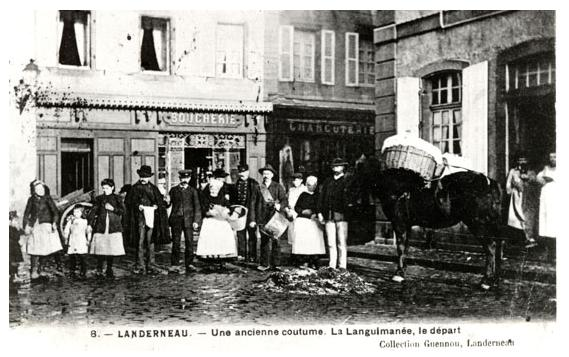
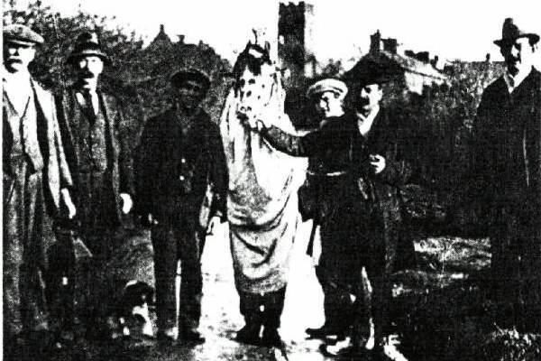
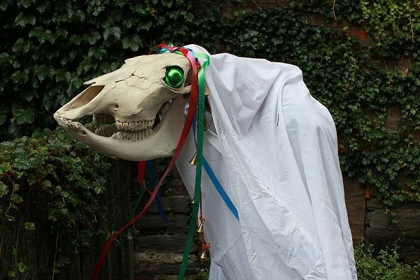
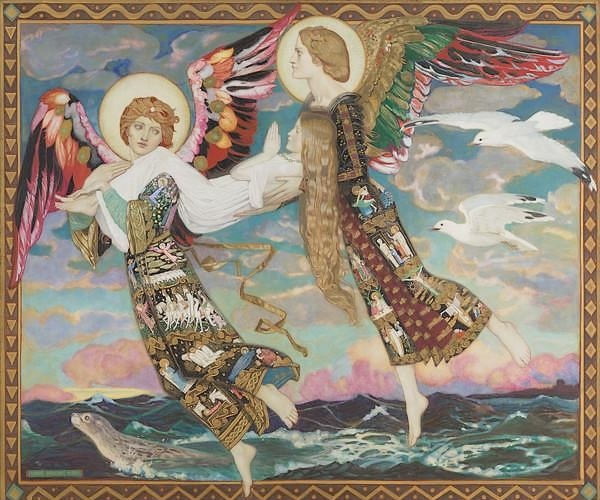

La tournée des étrennes
The Christmas Gift Tour
Dialecte de Cornouaille
|
Une version vannetaise, "Aguilaned er Blai Nehue", très proche du chant du Barzhaz, a été publiée par Yann Kerhlen , alias le Père Jean-Mathurin Cadic, dans la "Revue de Bretagne et Vendée, tome V de 1891, p.150. La mélodie est donnée ci-après. Le site tob.kan.bzh donne à ce chant le n°427 dans la classification Malrieu. Il recense 5 études sur les tournées d'aguilaneuf, 23 versions et 36 occurrences (non compris celles du 2ème carnet de La Villemarqué). |
 |
A Vannes dialect version, "Aguilaned er Blai Nehue", very similar in words and tune to the Barzhaz song, was published by Yann Kerhlen , alias the Reverend Jean-Mathurin Cadic, in "Revue de Bretagne et Vendée", Part V for the year 1891, p.150. The tune is given hereafter. The tob.kan.bzh site gives this song the n ° 427 in the Malrieu classification. It lists 5 studies on Aguilaneuf gift tour, 23 versions and 36 occurrences (not including those in La Villemarqué's 2nd copybook). |
1° Mélodie du Barzhaz
(Hypophrygien)
2° Mélodie notée par Yann Kerhlen
(Premier couplet et refrain)
(Arrangement des 2 mélodies: Chr. Souchon)
|
In nom'ne Patris et Filii,
Salut, les gens de ce logis; Qui ne dort point, veuille écouter Le beau chant que nous avons fait. Refrain Au gui l'an neuf, O gai, gai, gai, L'an neuf, l'an neuf est arrivé! |
In nom'ne Patris et Filii,
En ur saludein tud en ti; Mar doh hoah dihun, cheleuet Er sonen hun nès composet. Chorus Agilanef, o gé, gé, gé Agilanef er blai nehué! |
In nom'ne Patris et Filii,
May God's blessing on this house be! May those who don't sleep lend an ear And the song we made they shall hear. Diskan As the new year is under way, "Happy new year!" that's what we say. |
| Français | English |
|---|---|
|
1.- In nom'ne Patris et Filii,
Dieu vous bénisse, en ce logis! Au gui l'an neuf, Au gui l'an neuf . 2 Une haute et belle maison! Qu'on voit de loin à l'horizon. 3. - Moi je dirais qu'on la devine: Les grands arbres cachent sa cime. 4. Nous cherchons chez vous ce tantôt De la viande pour tromper l'eau (*) 5. - Vous vous y prenez un peu tôt Le porc court encore en l'enclos. 6. - Nous sommes dix-huit gais lurons. Saignez-le, nous, nous le tiendrons. 7. - Mon chien dort près du tas de paille. Allez le tuer, viles canailles! 8. - Nous ne sommes pas si méchants Pour tuer celui qui vous défend! 9. - Si vous êtes les étrenneurs , Où sont donc passés vos sonneurs? 10. - Passant le ru, sur les cailloux, Ils ont déchiré leur biniou. 11. - J'ai monté la viande au grenier. Où donc est l'échelle? On ne sait. 12. - Il n'est besoin d'échelle au chat Pour attraper souris et rats. 13. - La patronne est à Saint-Divy. Et la clef avec elle aussi. 14. La clé du lard, la clé du lait... Car elle a pris toutes les clés. 15. - L'un d'entre nous est serrurier Et c'est un maître en son métier. 16. - Avant que céans vous n'entriez, Le verglas va vous pendre au nez. 17. - Au nom de Dieu, soyez courtois, La nuit est noire et le vent froid! 18. C'est du Rélec que vient le vent. On a rentré vache et jument. 19. Bonnes gens, point tant de manières! Il nous reste sept lieues à faire. 20. - Vous semblez être des malins. Donc, parlons peu, mais parlons bien. 21. Et pour entrer en ce logis, Dénouez donc les nœuds que voici: 22. Dites-moi donc, en un seul mot: Qui porte sa chair sur sa peau? 23. - Le vieux sillon que la charrue A tracé, dont la croûte est nue. 24. - Qui va le premier au marché Avec les yeux tout embués? 25. - A mon avis, c'est le chemin Mouillé de rosée, le matin. 26. - Mais vous en connaissez des foules! Combien de plumes a la poule? 27. - Exactement autant de plumes Qu'a d'étoiles au ciel, la lune. 28. - Dites-moi, de par votre étrenne, La vertu de la lune pleine. 29. - Celle de mettre du lin dans Les sillons au temps de l'Avent. 30. - Si vous avez le nez si fin, Qui furette dans tous les coins? 31. - Quelle dame, aujourd'hui soubrette, A perdu perles et fleurettes? 32. - Mais c'est le balais de genêt, De ses fleurs dorées dépouillé. 33. - J'ai cet arbre en mon jardinet: L'écorce vaut plus que l'aubier. 34. - L'écorce dont on fait des draps, C'est le chanvre, n'en doutez pas. 35. - Près de l'étang un arbre penche, Un petit nid sur chaque branche. 36. Avec un œuf dans chaque nid Et cent mille éclos un lundi. 37. Si vous me dites ce que c'est, Je vous recevrai de bon gré. 38. - Je le dirai sans rechigner: C'est du chêne que vous parlez. 39. Oui, c'est le chêne, assurément, Que l'automne charge de glands. 40. - Maison de paille et seuil de pierre: Etrenneurs, quel est ce mystère? 41. Cent mille chambres sont en elle Avec cent mille demoiselles. 42. Allez, dites-moi ce que c'est: De bon gré, je vous recevrai. 43. - De bon gré, recevez-nous donc En amis, dans votre maison. 44. Car il s'agit de vos abeilles Qui veulent emplir nos corbeilles. 45. Je vois passer un lumignon, A l'intérieur de la maison. 46. La patronne avec un couteau Va découper un jambonneau. 47. - Pour la viande, attendez encor, Il nous faut d'abord l' Herbe d'or. 48. - Quand les foins suivront la moisson, L' Herbe d'or, nous l'apporterons. 49. - En fait de viande, rien du tout, Si le recteur n'est avec vous. 50. - Même si cet être est exquis, Dieu nous inspire, nous aussi. 51. - Approche donc, fils de sorcière, Approche avec ta gibecière!, 52. Et ton cheval tout aussi bien. Qu'il soit chargé comme il convient. 53. Quand tu rentreras, ta monture Sera cuite dans la saumure. 54. - Poussons donc un puissant hourra! Nos étrennes sont enfin là! 55. Du lard, d'abord: un pied de long! Puis avoine et seigle à foison! 56. Un hourra pour les père et mère Et pour les sœurs et pour les frères! 57. Que vos gars sentent la santé! Vos filles la fleur d'oranger! 58. Année de coccinelle, année D'avoine, de blé, de rosée! 59. Dans votre cour, du chanvre gai Lorsque viendra le mois de mai! 60. En mai la fleur, en juin le grain, Et en juillet, le sarrasin. 61. En juillet la crêpe, un délice. Nous serons à votre service! 62. Amis, reprenons le chemin! Quêtons jusqu'à demain matin! 63. Mais où trouver pareille aubaine, Recevoir semblables étrennes? Au gui l'an neuf! Au gui l'an neuf! (*) Donner du goût la soupe de légumes. Trad. Christian Souchon (c) 2008 |
1. - In nom'ne Patris et Fili
May God's blessing on this house be! Christmas gift tour! Christmas gift tour! 2. This is a house stately and high And conspicuous far and wide. 3. It would be visible still more If there were no high trees before. 4. To knock at your door we came straight: To fool our water we need meat. (*) 5. - Early you are coming, indeed. The pig is still upon its feet! 6. - There are eighteen of us, stout, bold, While you kill it, the pig we hold. 7. - My dog sleeps near the stack of straw Just kill him with your bloody paws! 8. - But we never would feel up to Slaughtering the one who defends you. 9. - If you're Christmas gift collectors Where has gone your band of pipers? 10. - While they were jumping o'er the brook Their big bag was caught on a hook. 11. - My meat is in the loft upstairs The ladder is...No one knows where. 12. - Without ladder can do the cats And yet they can catch mice and rats. 13. - The goodwife went to Saint-Divy Who has taken with her the keys. 14. Key of the meat, key of the milk Say what you will: key of that ilk. 15. - But we have a locksmith with us Who is in his calling famous. 16. -Before into this house he goes, Ice will be hanging from your nose. 17. -Please, speak to me with courtesy. The night is dark, the wind icy. 18. The wind is blowing from Rélec. Outside, cow or mare are at risk. 19. In God's name, be quick, my good folk, We still have a seven mile's walk! 20. - You have ready tongues in your heads! Let's speak less, but speak well, instead. 21. If it is your earnest prayer, Untie the knots that you have there. 22. And see that your answers be thin: Who wears his flesh above his skin? 23. - The fallow land behind the plough Is turned flesh up and skin below. 24. - Who goes first to the market place With tears running all down his face? 25 - The head of the main road gleaming, With dew on it in the morning. 26. - If you are so wise, tell me then: How many feathers has the hen? 27. - As many feathers on her are As around the moon are there stars. 28. - Now for your Christmas gift's sake, Tell me what the full moon can make. 29. The full moon, around Christmas, Can make each furrow brim with flax. 30. - Lad, you thread your way like a mouse. Who rummages about the house? 31. Who is that lady, turned to maid, Who lost pearls and blooms from her head? 32. - I guess that it must be the broom Which has lost all its yellow bloom. 33. - I have got a shrub in my park Whose stem is less worth than its bark? 34. - Its bark is made into white sheet It's a hemp shrub, if you don't cheat. 35. - A tree standing near the pond, now With a little nest on each bough. 36. Each nest with an egg hatched away, A hundred thousand on a day. 37. If you can say me what it is We'll gladly answer your wishes. 38. - I shall tell you this straight out. This tree is an oak and no doubt. 39. It's an oak and, around it, all The acorns on the ground in fall. 40. - Wee straw huts, with stone balusters Are also mine, gift collectors. 41. Each has a hundred thousand cells Where as many young ladies dwell. 42. Should you know what they're doing here, To your begging we'd lend an ear. 43. Over this word I nearly swoon For we shall enter your house soon: 44. Each of these people is a bee Anxious to give us Christmas fee. 45. I see within the house a light And the goodwife holding a knife. 46. Yes, holding a knife in her hand: I think she goes to the meat stand. 47. Every bit of meat we withhold If you don't bring the Herb of gold. 48. - When harvest and hay time has come We'll send herb of gold to your home. 49. - To give meat were no thing to do, Unless the parson were with you. 50. - Though the man is very charming, It's in God's name that we're begging. 51. - Now, come nearer, son of a witch, Come, and your bag you may unhitch! 52. Let the meat horse come near to me. It shall be burdened splendidly. 53. And when it returns to your home The brine shall have eaten its bones. 54. - Let us all give a loud cheer For the Christmas gift we see here: 55. Smoked bacon, more than a foot. Plenty of rye and oats to boot! 56. A cheer for the head of the house, His wife, children and man and mouse! 57. May his boys always be healthy And his girls smell of patchouli! 58. A year of lady-birds and of dew, Of oats and of wheat we wish you. 59. May hemp thrive in your yard, plenty, As soon as comes the month of May! 60. In May its bloom, in June its flake And in July the white pancake! 61. In July with the white pancake, Our orders from you we shall take. 62. For now, let us resume our tour, Until sunrise, my fellow poor!. 63. But anywhere else we shall miss So rich a Christmas gift as this! Christmas gift tour! Christmas gift tour! (*) To flavour a vegetable soup. Transl. Christian Souchon (c) 2008 |
Cliquer ici pour lire le texte breton.
For the Breton text, click here.

|
Résumé
Autrefois, en Bretagne, Noël était surtout la fête des pauvres . Le lendemain de Noël , ils circulaient en bandes, de hameau en hameau, précédés d'un vieux cheval décoré de laurier et de rubans , pour faire la collecte des étrennes. Ils le faisaient en chantant une ritournelle dont le sujet ne variait guère, mais qu'ils modifiaient au gré de l'inspiration du moment. Ils s'arrêtaient devant chaque porte un peu riche et leur chef entamait avec un des habitants de la maison une joute verbale dont il sortait toujours vainqueur après une longue résistance. En voici un exemple, noté par la Villemarqué en Spezet, dans la Montagne Noire. Un peu d'étymologie Suivant sa pente naturelle, La Villemarqué explique dans une longue note le refrain du chant: "Eginane! Eginane!" - qui est adaptée du français "Au gui l'an neuf" , vœu prononcé sous cette plante porte-bonheur -, comme étant un ancien mot celtique dont serait issue l'expression française et non le contraire (breton 'egin' et gallois 'egin(yn)' =germe). De le même façon, il expliquera le mot commun aux langues romanes, "camarade" par le breton "kember" -confluent! En l'occurrence, la raison qu'il donne pour cette étymologie est que les "étrenneurs" sont invités à fournir la mystérieuse Herbe d'or dont il est question dans d'autres chants (en tout cas dans les versions qu'en donne le Barzhaz), plutôt que le gui dont il n'est jamais question. (BB 1867, p.452) Il souligne l'existence de traditions similaires "dans un grand nombre de provinces et même en Ecosse", attestées par "une cinquantaine de leurs chants" reçus" par l'ancien Comité de l'histoire et des arts". On trouve de telles tournées en particulier dans le Limousin, étudiés par d'Aigueperse, en Poitou Saintonge et Angoumois où "les chansons commencent à la manière bretonne: "Messieurs er mesdames de cette maison/ Ouvrez-nous la porte, nous vous saluerons/ Notre guilaneuf nous vous demandons..." Il salue en outre le travail Jérôme Bugeaud qui "a publié (dans le "Bulletin du bouquiniste", 1866, p. 1278) 6 morceaux sur le même dont le mieux réussi est l'oeuvre d'un curé poitevin. Ce dernier est l'émule [du Rabelais breton], Noël du Fail (1520-1591), qui [dans ses "Propos rustiques"] assurait que "les sorciers de Rétiers en Bretagne cherchaient du trèfle à quatre feuilles pour aller à l'Aguilaneuf." Outre les formes romanes "guillané, guillanneu, guillonéou, guilloné, hoguinano, la guillona... aguinaldo (Espagne), La Villemarqué mentionne des formes celtes de ce mot: galloises: eginyn et eginad, irlandaise : eigean, écossaise (Scots); hogmanay et gaèle: eigin dont la racine lui sembe être "eg", signifiant, "force, pousse, germe et ce n'est qu'avec le temps qu'il a pris la signification de "prémices, étrennes". La Villemarqué signale avec une satisfaction évidente que son hypothèse avait reçu la consécration de l'"illustre Jacob Grimm" qui l'approuvait dans une lettre du 3 août 1856, suivi en cela par un autre membre de l'Institut, le comte H-F. Jaubert (1798-1874), auteur d'un "Glossaire du centre de la France" publié en 1864 (p. 354). Dans un article de la revue "ArMen" (N°1, février 1986, p. 42-56), MM. Donatien Laurent et Fañch Postic, complètent la démonstration de cette thèse en s'appuyant sur le manuscrit du "Dictionnaire de la langue bretonne" de dom Louis Le Pelletier (1716) et le dictionnaire lui-même, paru en 1852. Pour l'essentiel, il ne faudrait pas, nous dit-on à l'article "eghina", s'imaginer que l'expression "au gui l'an neuf" (lat. "Ad viscum annus novus") ait appartenu au langage des druides. C'est en réalité une déformation du "gaulois" (en fait, du breton) "Egin an ed" - que le Père Grégoire de Rostrenen dans son dictionnaire de 1732 traduit par "germe du blé" , ce qui permet à Le Pelletier de rattacher les étrennes à la Nativité. Une étude contemporaine, celle de Juan Caro Barojas sur le "Carnaval", parue en France en 1979 en soulignant l'analogie qui existe entre les mascarades hivernales des Asturies (Aguilanderos) et les cortèges bretons renforce l'idée d'une origine celtique de ces pratiques, sans tomber dans l'exagération comme Jacob Grimm qui voyait dans le mot breton "kalanna" (étrennes) non pas le successeur du latin "Calendae", premier jour du mois, mais un parent du mot "kelid", germe! (Les "calendes" étaient ainsi appelées parce que ce jour-là les prêtres "proclamaient" (calare) si les nones tombaient , suivant les cas le 5ème ou le 7ème jour du mois). L'herbe d'or, encore et toujours L'examen du chant tel qu'il a été noté dans le carnet de collecte N°2, montre que la référence à l'Herbe d'or, strophe 47, en est absente. On pourrait douter de la réalité de cette tradition, si elle n'était évoquée à la page 155-84 du même carnet dans le chant "Gwai gwez alar": "Dont a ray a-benn ur gaouad/ gant ur flac'h [=falc'h?] arc'hant da falc'hat"= Il viendra après une averse/ Faucher avec un fléau [=faux?] d'argent" . D'autant que La Villemarqué qui n'a pas vu l'allusion, n'a pas traduit "a-benn ur gaouad", "après l'averse" provoquée par la faux métallique qui a coupé malencontreusement la fameuse herbe magique. Dans les "Notes" qui suivent la "Tournée", La Villemarqué, prévient son lecteur: "On sent que l'agrément de ce débat poétique où la bonne humeur pourrait facilement dégénérer en farce est surtout dans le tact des interlocuteurs" . Et il cite un poète breton: "Chez nous des laboureurs rustiques, point de rustres" . L'introduction de l'"Herbe d'or" contribue justement à relever le niveau de cette joute oratoire qui dans la version originale se complait dans la scatologie: le mot du Breton Cambronne est cité trois fois, accompagné d'expressions que le bon goût et l'honnêteté interdisent de traduire "toull ar brein", "lipat ar reor" ... Ce n'est donc pas par hasard que le nom de Rabelais est prononcé dans ces longues notes. Les images qui donnent lieu aux énigmes soumises à la sagacité des étrenneurs sont pour la plupart d'une affligeante banalité comme on pourra s'en persuader en se reportant à la page bretonne. C'est pourquoi Kervarker a laissé de côté 53 distiques et a reformulé la plupart des autres. C'est ainsi qu'à la strophe 27, il déclare que "La poule a autant de plumes que la lune d'étoiles autour d'elle" , là où son modéle disait "On doit dépasser les mille en comptant toutes les plumes du cou". En s'efforçant de remédier à la verdeur du discours original, La Villemarqué a gommé certains éléments évoqués dans ses "notes": une rapière surnommée "fifre" (pifalc'h) destinée à mâter une servante indocile (p.99, str uu), si la "poche...pour mettre les andouilles et autres émoluments de la queste" (str. 51) figure bien dans le poème du Barzhaz, la "broche pour le lard" dont parlait Noël du Fail (1520-1591), conseiller au parlement de Rennes dans ses "Propos rustiques" (1547) a disparu, alors que c'était sans doute ce que désignait la strophe gg à la page 97: "Hemañ... a vo lakaet war-benn ar vazh"= "Accrochez-le au bout du bâton!" Sauf à supposer qu'il disposait d'autres sources d'où il aurait tiré également les strophes 56 à 61 sans équivallents dans les pages 93 à 101 du carnet 2, il apparaît que l'affirmation du Barde de Nizon "On demande encore aujourd'hui la fameuse Herbe d'or aux étrenneurs..." est une affabulation qui ne saurait prouver que le mystérieux "Eginane" est un dérivé du mot breton '"egin", "germe", plutôt que la transposition d'une expression française, même si cette théorie avait l'aval de l'illustre Jacob Grimm dans sa lettre du 3 août 1856 adressée à La Villemarqué. La (double) fin, à savoir la métamorphose d'un texte trivial en vue de le rendre poétique et l'assignation d'une origine brittonique à la tradition du gui de l'an neuf, ne justifie pas les moyens, en l'occurrence l'altération consciente dudit texte, la construction d'une théorie développée sur toute une page de notes à partir de cette falsification et l'usage indélicat de l'adhésion qu'un grand personnage apporte de bonne foi à ce subterfuge. Le jeune La Villemarqué usait de ce procédé dès 1838, quand il se prévalait de la caution d'un auteur en vue qui l'honorait imprudemment de sa confiance, l'historien Augustin Thierry, pour "prouver" le bien-fondé de théories erronées, fondées sur une tradition orale qu'il avait lui-même falsifiée (cf. Silvestrik, alias "Retour d'Angleterre" ). Trente ans plus tard le membre correspondant de l'Académie royale de Berlin (grâce à l'appui de Jacob Grimm!) et le membre de l'Institut qu'il était devenu commettait encore de telles indélicatesses! Les chansons de quête Notons ici que le Chanoine Pérennès, dans une étude intitulée "Guinnanée et Noëls populaires bretons", propose une autre interprétation. Il cite in extenso l'article du "Mercure Galland" de février 1683 que Ménage consacre au mot "Guignannée", "cette feste qu'on fait à Morlaix le dernier jour de l'an ", décrite comme une fête de charité organisée par la municipalité. Cette description rejoint celle qu'en donne M. Le Guen pour la ville de Landerneau , dans un article pour la Société académique de Brest (T. IV page 234): [...] "Un massier tenait à la main un bâton à l'extrémité duquel flottait une touffe de rubans de diverses couleurs [...] Quand le cortège s'arrêtait pour recevoir les présents offerts, l'un des sergents de ville préposés au bon ordre élevait l'objet en l'air pour le montrer au public. Les tambours exécutaient un roulement et le massier, auquel la foule faisait chorus, s'écriait plusieurs fois "Languinanné!" en agitant majestueusement son caducée!" Il est question d'une perche, au bout de laquelle les chanteurs ambulants brandissaient leurs trophée, dans la version d'"Eginane" que donne le Chanoine: L'Eginane de Sainte-Tréphine (Côtes d'Armor). Mais cette dernière tradition, disparue avec la "grande" guerre, se célébrait lors des jours gras (précédant le carême) et les "eginanerien" (étrenneurs) s'appelaient des "morlajerien" (de "Meurlarjez", Mar(di) des largesses?, Mardi gras), bien que le refrain de leur chant ait été, lui aussi "Eginane". L'étymologie qu'il donne du protéiforme "Au gui l'an neuf" est celle proposée par l'archiviste départemental du Finistère, M. Le Men, qui cite une ancienne poésie du XVIème siècle, dans ses "Etudes historiques sur le Finistère", p.184: "C'est pourquoi sommes assurés Que jamais ne refuserez Pour commencer l'an en bon heur De nous donner par honneur Acquit d'an neuf de bon cœur. Le Men ajoute: "L'Acquit d'an neuf" était une sorte d'impôt volontaire que le riche payait aux pauvres, comme marque de réjouissances à l'approche du nouvel an qui allait encore une fois s'ouvrir pour lui, et dans cette acception, la seule qu'il puisse avoir, ce me semble, ce terme est synonyme d''étrennes'". L'explication "celte" que donne La Villemarqué est d'autant moins crédible qu'il cite lui-même des traditions similaires dans les provinces de langue française qui mettent en scène une cavalière , la "Guillaneu". Ce nom provient à coup sûr de "Gui l'an neuf", de même que la "Bofana" italienne tire le sien de l'Epiphanie. Les chansons de quête correspondantes ont été étudiées par le folkloriste Arnold van Gennep (1873 - 1957). On en trouve jusqu'au Québec (sous le nom de La Guignolée). En voici une:
On remarquera que le cheval de la Guillanée est affligé des mêmes infirmités que Brigitte dans le chant breton dont il sera question plus loin. La date des quêtes d'étrennes On peut-être étonné que ces quêtes d'étrennes par des chanteurs en tournées aient lieu à des dates diverses.
Au Cap-Sizun, c'est également le 31 décembre que des cortèges d'enfants armés d'un bâton contre les chiens allaient de ferme en ferme demander "des crêpes et un liard":
"Kanomp Nouel" chanté par Anne Auffret (Texte recueilli par Dom J.-L. Malgorn auprès de M. Trécant, vicaire à Plouharnel). Chez les anciens Celtes, le milieu et le point d'équilibre structuraient les notions calendaires : le jour commençait au coucher du soleil, la lunaison au premier quartier, chacune des 2 saisons-semestres débutait 1 mois et demi avant le solstice. De ce fait, l'alternance nuit et jour, pleine lune et nouvelle lune, les solstice d'hiver (Noël) et solstice d'été (saint Jean d'été) étaient situés au milieu de la séquence considérée. En breton, seules les saisons principales ont des noms simples: hañv ha goañv: été et hiver. Les deux axes de l'année celtique sont toujours décelables dans le vocabulaire breton: L'un sépare les semestres sombre et clair: - kala goañv, calendes d'hiver, 1er novembre, - kala hañv, calendes d'été, 1er mai. L'autre joint les fêtes médianes qui marquent la culmination de chaque saison: - gouel Berc'hed, fête de Brigitte, 1er février, - gouel Eost, fête d'août, 1er août. On retrouve ainsi les 4 fêtes saisonnières de l'année irlandaise ancienne: Samain, Belteine, Imbolc et Lugnasad. Lug qui présidait à Lugnasad était le dieu suprême du panthéon celtique. Solaire et lumineux, il garantissait la fécondité des êtres et des récoltes. Brigit serait la mère de tous les dieux d'Irlande ("mater omnium deorum hibernensium") selon le glossaire de Cormac McCuilennain (10ème s.) Ses autres noms seraient Boand, Etain ou même Dana, dont on assure que Sainte Anne serait l'héritière bretonne. La célébration de la sainte, la veille de la chandeleur , comme annoncé dans le chant, a conduit à confondre les 2 fêtes. De plus la forme féminisée du nom de baptême de la sainte suédoise, Birger Pederson (1302-1374), Birgitta, a été confondue avec celui de la sainte irlandaise. Cette sainte catholique devenue la patronne d'un pays protestant a supplanté son homonyme irlandaise. Contrairement à celle-ci, on continue à célébrer sa fête qui tombe le 23 juillet depuis 1969. Une tradition galloise analogue: Mari Lwyd On trouve sur le site de l'Association Chorale de Bangor l'information suivante: "La Mari Lwyd (Y Fari Lwyd) est une antique tradition de certaines régions du Pays de Galles (Glamorgan et Gwent) qui met en scène [le jour de l'an], un groupe d'étrenneurs en costumes bariolés. L''un d'eux porte un déguisement dont un crâne de cheval constitue la pièce maîtresse. Ils s'en vont de maison en maison et de cabaret en cabaret. A chaque fois, ils chantent plusieurs couplets, auxquels les maîtres des lieux, qui leur laissent d'abord porte close, répondent par des devinettes ou des réprimandes également rimées. Cette joute oratoire s'appelle pwnco . A la fin de l'exercice, qui dure plus ou moins longtemps, selon l'inventivité dont font preuve les protagonistes, les étrenneurs entrent en chantant une autre chanson. Après être presque tombée dans l'oubli jusque dans les années 1950, [- comme l'indique le site Folkwales.org.uk, "les étrenneurs s'étaient fait une réputation d'ivrognes et de vandales écumant les villages et plus d'un pasteur avait réclamé en chaire l'abandon de coutumes autant barbares que païennes" -] cette pratique a été remise en honneur par des associations folkloriques de Llangynwyd, Llantrisant et Cowbridge, entre autres." Les traditions qui tournent autour d'un crâne d'animal sont rares. On en trouve chez les Indiens d'Alaska et sur l'ïle de Java, en Indonésie. Mais en Europe on peut penser qu'elles sont l'apanage de cette petite partie du Pays de Galles. Voici un exemple de couplets introductifs d'un "pwnco":
Chantée par le Community Choir of Bangor Rhiannon, Odin et les autres
Crâne qui ne peut trépasser Mille ans déjà sans pouliner, Bridée de chagrin Et sellée de peur, Je trotte aux prairies de crainte et d'horreur Galope entre le sommeil et l'éveil Cherchant un havre accueillant Sans pleurer pourtant, Ouvrez-moi! |
 |
Un grand merci à M. Erwan HAINE à qui je dois la plupart de ces références!
Ainsi qu'à Cattia SALTO qui m'a fait l'honneur de citer quelques passages de la présente page dans son blog "Terre Celtiche" :
https://terreceltiche.altervista.org/kanomp-noel-kanamb-noel/
Elle montre que des usages comparables à la tradition bretonne de quête existent en Italie du Sud, les "canti della vecchia Strina " :
https://terreceltiche.altervista.org/la-vecchia-strina/
et en Grande-Bretagne, les " chants de Wassail " ("Be-healthy") de Cornouailles britannique :
https://terreceltiche.altervista.org/wassailing-cornish-wassail-songs/ .
In olden times Brittany, Christmas was, above all, the feast of the poor . On Boxing day , they went in groups from hamlet to hamlet, with an old horse adorned with laurel and ribbons ahead of them, to collect Christmas gifts. They did it in singing a song whose subject never varied, but that was altered to fit the singers' inspiration of the moment. They would stop in front of each rich looking doorway and their leader would start with one of the house dwellers a verbal contest which he always won after a long resistance. Here is an instance of such battle of wits, noted by La Villemarqué in Spézet, Black Mountain (BB 1867, p.452).
A little bit of etymology
Following his natural trend, La Villemarqué explains in a note the burden of the song "Eginane! Eginane!" -which is adapted from the French "Au gui l'an neuf!" (Under the mistletoe -gui- I wish you a happy new year - an neuf-!) as an ancient Celtic word from which the French phrase would derive and not the contrary (Breton 'egin' and Welsh 'egin(yn)' =germ!). He also explains the Romance word "comrade" by the Breton "kember" -confluent!. In the present song, the reason he gives for this etymology of his is that the gift collectors are requested to bring the supernatural Herb of Gold , referred to in other songs (or more preciseley in the Barzhaz versions thereof), rather than mistletoe which is never mentioned.
He insists on the existence of similar traditions "in a great number of French provinces and even in Scotland", attested by "about fifty of their songs" received "by the Committee for Old History and Arts". Such gift collecting tours are mentioned in particular in Limousin, studied by d'Aigueperse, in Poitou, Saintonge and Angoumois where "the songs begin in the same way as their Breton counterparts: " Gentlemen and ladies of this house / Open the door for us, we will greet you / A "guilaneuf" we ask from you ... " He also salutes Jérôme Bugeaud's work who" published (in the "Bulletin du bouquiniste", 1866, p. 1278) 6 similar pieces the best od which is quoted by a priest from Poitou, an emulator [of the "Breton Rabelais"], Noël du Fail (1520-1591), who [in his "Rustic Proposals"] ensured that "the sorcerers of Rétiers in Brittany were looking for four-leaf clover before they went on Aguilaneuf tours. "
In addition to the Roman forms "guillané, guillanneu, guillonéou, guilloné, hoguinano, la guillona ... aguinaldo (Spain), La Villemarqué mentions Celtic forms of this word: Welsh: eginyn and eginad, Irish: eigean, Scots; hogmanay and Gaelic: eigin whose root seems to him to be "eg", meaning, "force, push, germ" and it is only with time that it took the meaning of" first fruits, new gifts ".
La Villemarqué reports with obvious satisfaction that his hypothesis had received the consecration of the "illustrious Jacob Grimm" who approved it in a letter of August 3, 1856, followed in this by another member of the Institute, Count H-F. Jaubert (1798-1874), author of a "Glossary of the Central France dialects" published in 1864 (p. 354). In an article in the review "ArMen" (No. 1, February 1986, p. 42-56), MM. Donatien Laurent and Fañch Postic, complete the demonstration of this thesis by relying on the manuscript of the "Dictionary of the Breton language" by Dom Louis Le Pelletier (1716) and the dictionary itself, published in 1852. Essentially , one should not, so we are told at item "eghina", imagine that the expression "au gui l'an neuf" (lat. "Ad viscum annus novus") belonged to the language of the Druids. It is in reality a deformation of the "Gallic" (in fact, of the Breton) "Egin an ed" - that Father Grégoire de Rostrenen in his dictionary of 1732 translated by "germ of wheat " , which allows Le Pelletier to attach the New Year's gifts to the Nativity.
A contemporary study, that of Juan Caro Barojas on the "Carnival", published in France in 1979 underlining the analogy which exists between the winter masquerades of Asturias (Aguilanderos) and the Breton processions reinforces the idea of ??a Celtic origin of these practices, without falling into exaggeration like Jacob Grimm who saw in the Breton word "kalanna" (New Year's Eve) not the successor of the Latin "Calendae", first day of the month, but a relative of the word "kelid", germ! (The "calends" were so called because on that day the priests "proclaimed" (calare) if the nuns fell, depending on the case on the 5th or the 7th day of the month).
The Herb of Gold again and again
The examination of the song as it was recorded in the Collection notebook N ° 2, shows that it includes no reference to the Herb of Gold in stanza 47. We could even doubt the reality of this tradition, if it was not referred to it on page 155-84 of the same notebook, in the song "Gwai gwez alar": "Dont a ray a-benn ur gaouad / Gant ur flac'h [= falc'h?] arc'hant da falc'hat "= He will come after a downpour / And mow our crops with a silver scythe" . Especially since La Villemarqué who failed to see the hint, did not translate "a-benn ur gaouad", "after the downpour" (caused by the gold scythe which happened to cut one of those magic herbs).
In the "Notes" which follow the "Gift gathering Tour" song, La Villemarqué warns the reader: "We feel that this enjoyable humourous poetic debate could easily degenerate into farce if the interlocutors were lacking in tact. " . And he quotes a Breton poet: "We may be country labourers, we are no rustics" . The introduction of the "Herb of Gold" contributes precisely to raise the level of this oratory joust which in the original version delights in scatology: the heroic curse of Napoleon's Breton general Cambronne is quoted three times, along with crude phrases that good taste and propriety prohibit translating "toull ar brein", "lipat ar reor" ... It is therefore not by chance that the name of Rabelais is evoked in these long notes.
By referring to the Breton page of this song, you may satisfy yourself that the images embodied in the riddles subjected to the sagacity of the gift gatherers are, for the most part, distressingly trivial. Therefore Kervarker left out 53 couplets and reformulated most of the rest. Thus in stanza 27, he states that "The hen has as many feathers in its coat as the moon has stars surrounding it" , whereas his model said "The count may exceed a thousand if you include the feathers of the neck".
In his attempts to alleviate the crudeness of the original song, La Villemarqué has erased certain elements found in his "notes": a rapier dubbed as "fife" (pifalc'h) apt to reduce to obedience the reluctant maidservant (p.99, str uu). If the "pouch ... intended for sausages and other form of gatherers' emolument" (str. 51) does appear in the Barzhaz poem, the "spit for roasting bacon " , also mentioned in his" Rustic Speech" (1547) by the Adviser to the Rennes Parliament Noël du Fail (1520-1591), has disappeared. though it was probably addressed in stanza gg, on page 97: "Hemañ ... a vo lakaet war-benn ar vazh" = "Hang it on the end of the stick!"
Unless he could avail himself of other sources, possibly containing the stuff for stanzas 56 to 61 which have no equivallent on pages 93 to 101 of notebook N° 2, it appears that the statement by the Bard of Nizon to the effect that "Season's gift gatherers are still today required to provide the famous Herb of Gold ..." is a mere fiction which cannot confirm that the mysterious word "Eginane" is derived from the Breton "egin", "germ", rather than adapted from a French saying, even if this theory is acknowledged by the illustrious Jacob Grimm in a letter of August 3, 1856, sent to La Villemarqué.
The (double) end, namely the metamorphosis of a trivial text with a view to making it poetic and the wish to assign a Celtic origin to the New Year mistletoe tradition, does not justify the means: deliberate alteration of the said text, elaboration, starting from these false premises, of a theory developed over a whole page of notes and misuse of the adhesion brought by an eminent character, in good faith, to this subterfuge.
Young La Villemarqué had resorted to this scheme in 1838, when he took advantage of the patronage of a prominent author who recklessly honored him with his trust, the historian Augustin Thierry, to "prove" the validity of erroneous theories, based on oral tradition which he himself had falsified (cf. Silvestrik, now "Return from England" ). Thirty years later the member of the Institute and (thanks to Grimm!) of the Royal Academy of Berlin that he had become was still committing such indelicacies!
The gift collecting songs
Be it mentioned here that Canon Pérennès, in a study titled "Guinnanée and Breton Christmas carols", ventures another explanation. He quotes in extenso the article contributed to the "Mercure Galland" February 1683 copy by Ménage, to elucidate the word "Guignannée", "a merrymaking held in Morlaix on the last day of the year ", described as a charity festival supported by the town council. This description coincides with M. Le Guen's statement, concerning Landerneau town, in an article for the journal of the Société académique de Brest (Book IV page 234):
[...] "A mace bearer held in his hand a staff adorned at one end with a bunch of many-coloured ribbons [...] When the retinue would stop to receive the presents given by donors, one of the constables charged with preserving good order would raise them high up so all on the street could see. The drums would roll and the mace bearer, echoed by the populace, would hail them with repeated cries of "Languinanné!" shaking his caduceus in a stately way!"
There is also a staff, used by the wandering singers to brandish their trophies, in the version of the "Eginane" song recorded by Canon Pérennès: Eginane of Sainte-Tréphine (Côtes d'Armor). But this latter, which did not survive WW I, was a Shrovetide tradition (preceding the fast of Lent) and the "eginanerien" (gift collectors) were called "morlajerien" (from "Meurlarjez", Shrove Tuesday, in spite of the burden of their song, which was also "Eginane".
He gives for the many forms of the cry "Au gui l'an neuf" the etymology set forth by the Archivist in-Chief of Finistère, M. Le Men who quotes a 16th century poem in his "survey on the history of Finistère", p.184:
"That's why we are confident
That you'll never be reluctant
To start the year under favourable auspices
And make a point of discharging
Your debt for the New Year freely."
Le Men adds: this "Acquit d'an neuf" (New year discharge) was a sort of tax spontaneously paid to the poor by the rich, on the occasion of a propitiatory New Year merriment, and, since this meaning seems to me the only plausible, this word is synonymous with "Christmas Box".
The "Celtic" explanation given by La Villemarqué is all the more incredible as he mentions in his comments a similar tradition in several French speaking provinces featuring a riding woman called la "Guillaneu". This name is without doubt derived from "Gui l'an neuf", as is the Italian Santa Claus "la Bofana" named after the Epiphany feast. The gift collecting songs were investigated by the folklorist Arnold van Gennep (1873 - 1957). They are found even in Québec (where the Guillaneu is called La Guignolée). Here is one of these songs:
|
La voué beille la guilloneu
La hoou peur la fenête Sur in petit chevau grisan Qui n’a ni quû, ni pés ni tête Les quatre pés ferrés tot nus. |
I do see the Guillaneu,
Up there through the window, Riding a little grey nag , With no tail, no feet, no head, And its four feet are shod anew. |
It is noticeable that the Guillanée's horse should be afflicted by the same shortcomings as Saint Brigid in the Breton carol addressed hereafter.
The date for gift collecting
It is astonishing that these gift collections by wandering singers should take place at different dates in the year.
|
Ma vec'h kountant, ni a gano
Ma ne vec'h ket, ni zizehano." |
If you are satisfied, we shall sing.
If you are not, we shall stop." |
At Cap-Sizun, it is also on 31st of December that parties of children armed with a stick against farm dogs visited the farmsteads of the district in quest of "pancakes and a penny":
|
Né, né (=eginane),
Un tamm krampous d'in ad stankañ va zec'hed, Hag ul liardik war c'horre. |
A bit of pancake to prevent thirst
And a little penny to boot. |
|
Pe oé arriu e hanter noz
Mari na gave mui repoz - Ur penn-goleu faot da Vari Hag unan a verhed en ti. - Bar en ti-men n'es chet merhied Nameit unan nauet Brehed: N'hi des lagad na fri erbed, Na divreh de zekour Mari - Laret dehi donet ervat! Ni hrei dehi fri ha lagad... - Brehed, Brehed, deuit-c'hwi Ho kouel e vo 'raok va hini. |
Now it was midnight
And Mary was in labour pains. - A candle bring and from this house Let a servant assist her! - No maids here whatsoever Except perhaps the named Brigid, Who has no nose, who has no eyes , Not even arms to help her. - Tell her to come, at all events: We shall give her back her nose and arms... - Brigitte, Brigitte come, Your feast shall precede mine. |
"Kanomp Nouel" sung by Anne Auffret
(Text collected by Dom J.-L. Malgorn who learned it from M.Trécant, curate of Plouharnel).
Among the ancient Celts, the middle and the point of equilibrium structured the notions of the calendar : the day began at sunset, the lunation at the first quarter of the moon, each of the 2 semester-seasons began 1 month and a half before the solstice. As a result, the alternation of night and day, of full moon and new moon, the winter solstice (Christmas) and summer solstice (Saint John's day) were located in the middle of the sequence considered.
In Breton, only the two main seasons have simple names: hañv ha goañv: summer and winter. The two axes of the Celtic year are still present in the Breton vocabulary:
One separates dark and light semesters:
- kala goañv, winter calends, November 1,
- kala hañv, summer calends, May 1.
The other joins the middle festivals which mark the culmination of each season:
- gouel Berc'hed, Brigitte's Day, February 1,
- gouel Eost, August festival, August 1st.
equivalent to the 4 seasonal festivals of the ancient Irish year: Samain, Belteine, Imbolc and Lugnasad.
Lug who presided over Lugnasad was the supreme god of the Celtic pantheon. Solar and luminous, he guaranteed the fruitfulness of beings and harvests.
Brigit was supposed to be the mother of all the gods of Ireland ("mater omnium deorum hibernensium") according to Cormac McCuilennain's glossary (10th century). Her other names were Boand, Etain or even Dana, of whom Saint Anne is said to be the Breton continuator. The celebration of the saint on the eve of Candlemas , as hinted at in the song, led to the confusion of the 2 feasts. Moreover, the feminized form of the baptismal name of the Swedish saint, Birger Pederson (1302-1374), Birgitta, was soon confused with that of the Irish saint. This Catholic saint who became the patroness of a Protestant country has supplanted her Irish namesake.
Unlike her, her feast day is still celebrated. It falls on July 23 since 1969.
A similar Welsh tradition: Mari Lwyd
The site of the Community Choir of Bangor gives the following information:
"The Mari Lwyd (Y Fari Lwyd) is an old tradition in parts of Wales (Glamorgan and Gwent) that involves a group of people dressed in colourful costumes, including one dressed as a horse with a horse's skull, going from house to house and pub to pub [on New Year's Day].
At each place they sing several verses which are answered by those inside with challenges and insults in rhyme, a battle of wits known as a pwnco .
At the end of the battle, which can be as long as the creativity of the two parties holds out, the Mari party enters with another song.
Though almost forgotten during the mid-20th century [as stated on the Folkwales.org.uk site, "the parties had gained a bad reputation for drunkenness and vandalism as they roamed the villages and many a sermon was preached against the continuance of such a pagan and barbaric practice"], this tradition is again practised by folklore associations in Llangynwyd, Llantrisant, Cowbridge and elsewhere."
Traditions involving animal skulls are rare. Native Americans of Alaska and Indonesian people of Java use them, but in Europe it should be found nowhere, but in this tiny part of South Wales.
Here are usual introductive verses of a "pwnco":
| Welsh | Brezhoneg | English |
|---|---|---|
|
Mari Lwyd
Wel dyma ni'n dwad Gyfeillion diniwad (twice) I ofyn am gennod (thrice) i ganu Os na chawn ni gennod Rhowch wybod ar ganiad Pa fodd mae'r 'madawiad, nos heno. - 'Does genni ddim cinio Nac arian iw gwario I wneud i chwi roeso, nos heno... |
Kan Marc'h Louet
Setu ni degouet c'hoazh, Keneiled dinoaz, (div w.) O c'houlenn aotre (teir w.) da ganañ. Mar n'hon-eus aotre bremañ Grit gouzout en ur c'han Peseurt disparti hor-bo fenoz. - Tamm ebet 'vit koaniañ, Nag arc'hant da foetañ 'N ur degemer ac'hanoc'h fenoz... Troet gant Betty-Anna NOIR |
Grey Mare carol
Here we come harmless companions, (twice) To ask permission (thrice) to sing If we don't have permission, Let us know in song How we should go away tonight! - I have no dinner Or money to spend To give you welcome tonight... |
Sung by the Community Choir of Bangor
Rhiannon, Odin and Co
|
The Hodening Hoss, the Marbury Dun,
Old Bone-face the deathless am I, Heavy with foal two thousand years, Bridled with sorrow, Saddled with fear, I canter through pastures of tremble and quake, I gallop the track between sleep and awake Seeking the deep of welcome And stint for my tears. Let me in!... |
 |
Thanks a lot to M. Erwan HAINE to whom I am indebted for most of the information above.
As well as to Cattia SALTO who did me the honour of quoting some passages from this page in her blog "Terre Celtiche":
https://terreceltiche.altervista.org/kanomp-noel-kanamb-noel/
It shows that uses comparable to the Breton gift collecting tradition also exist in southern Italy, the "canti della vecchia Strina ":
https://terreceltiche.altervista.org/la-vecchia-strina/
and in Britain, the " Songs of Wassail " ("Be-healthy") of British Cornwall:
https://terreceltiche.altervista.org/wassailing-cornish-wassail-songs/ .

"Saint Bride (sainte Brigitte) transportée à Bethléem"
par J. Duncan 1913, National Gallery, Edimbourg>br>